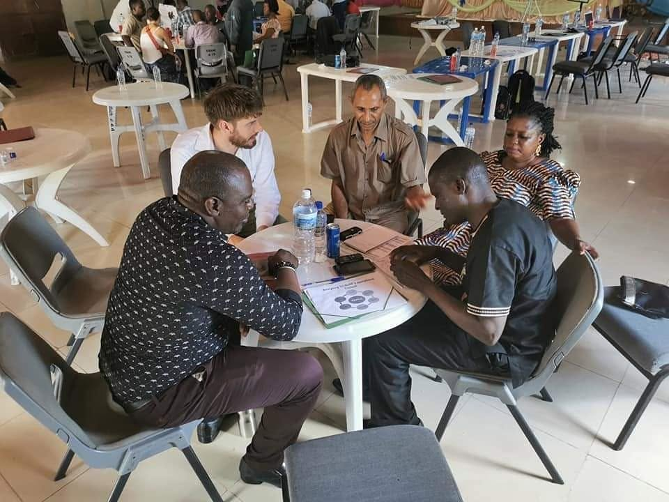
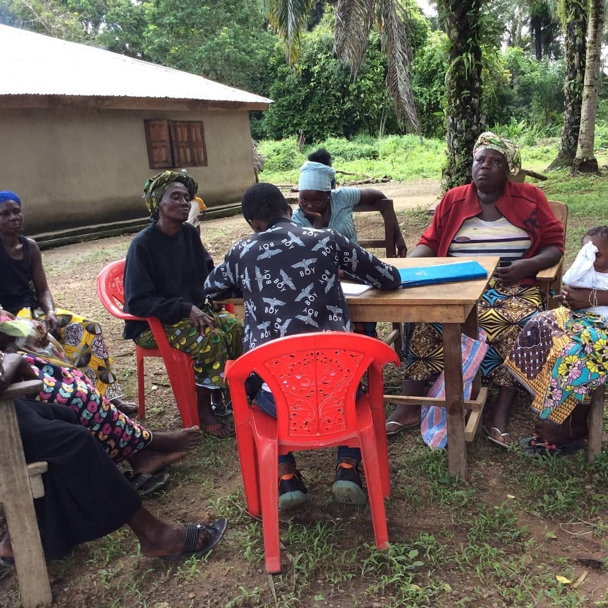
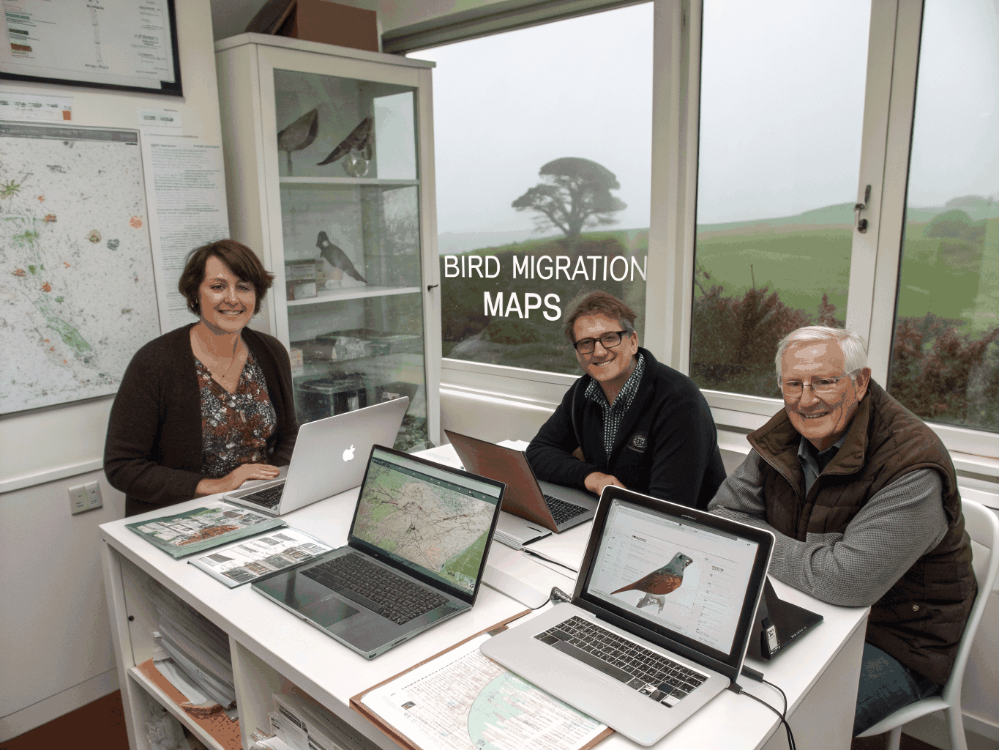
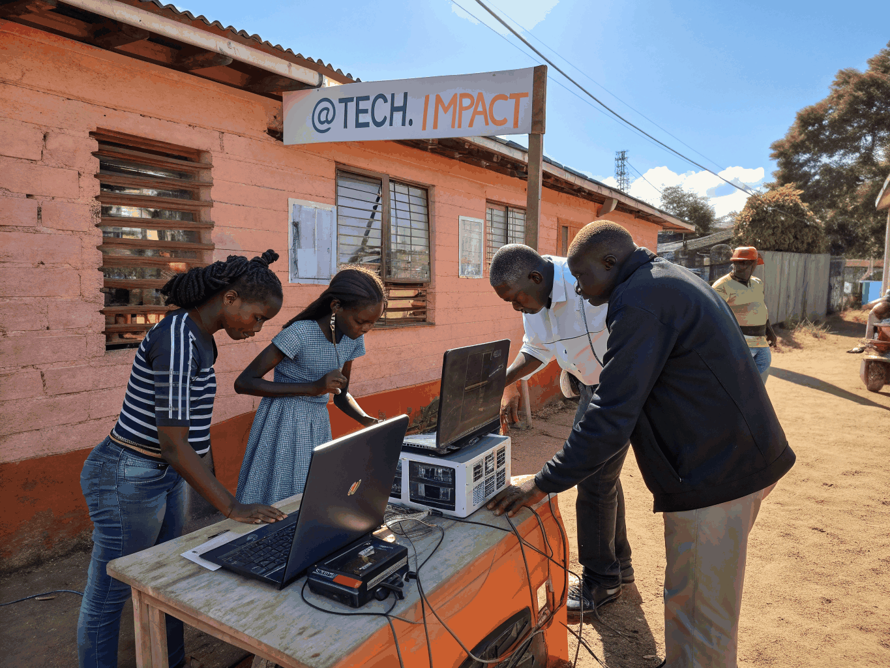
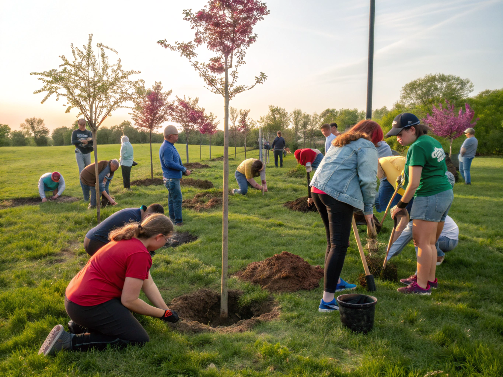
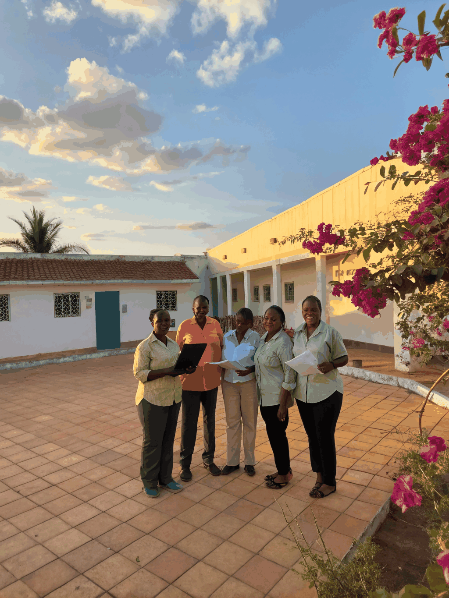
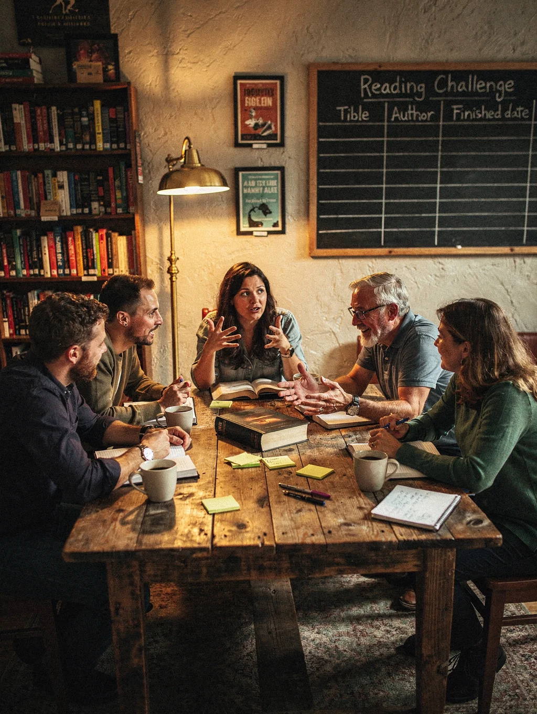
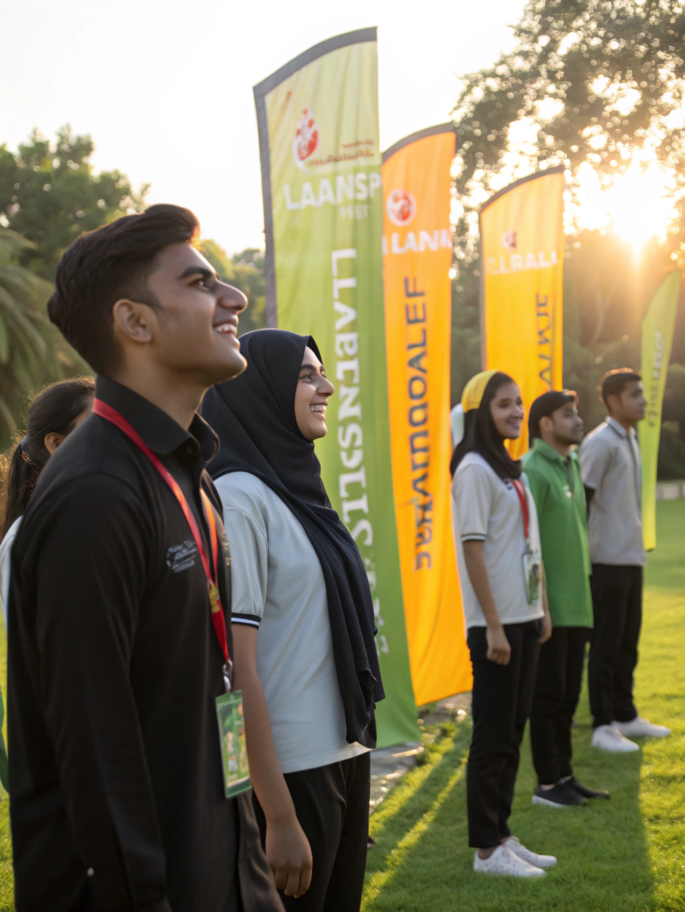
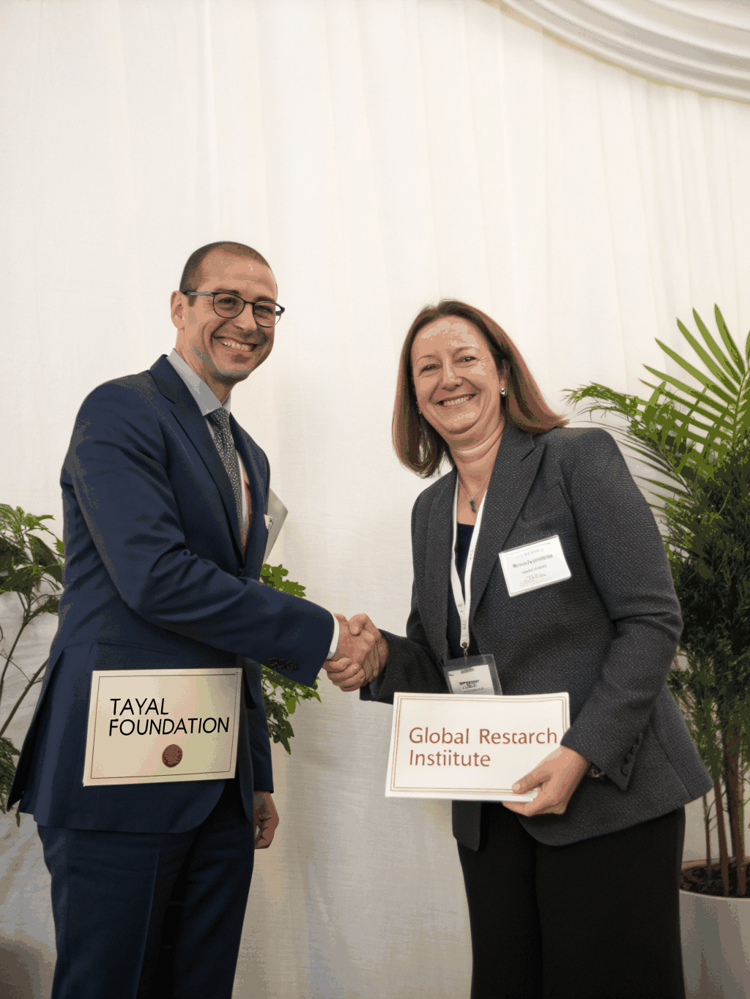
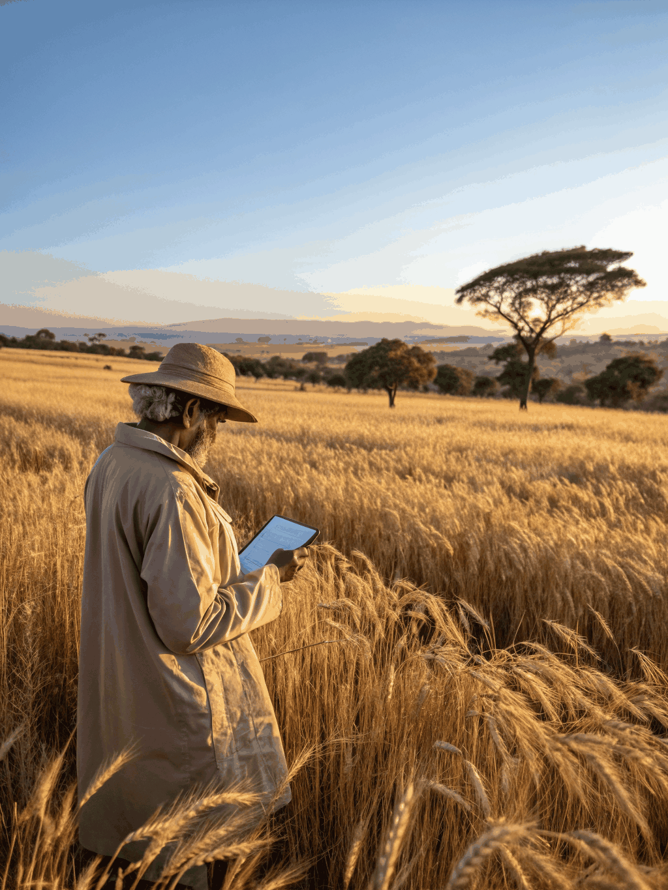

Think Africa Limited offers a unique blend of Program Development and Consulting Services. We use Consulting as an engine to showcase what we can offer and drive our potential. We partner with governments, NGOs, and development agencies to deliver gender-transformative solutions that drive sustainable change.

SERVICE 01We offer a unique blend of Program Development and Consulting Services. Using Consulting as an engine to showcase what we can offer and drive our potential, we provide:

SERVICE 02We design and implement transformative programs that address gender equality, youth empowerment, and sustainable livelihoods across West Africa. Our program development approach is grounded in the Human Rights Based Approach and focuses on:

[PRIORITY 01]Using research and capacity building as a key strategy to create, share and shed knowledge that drives sustainable development across West Africa.

[PRIORITY 02]Empowering women and youth as leaders while working to eliminate all forms of violence against women and girls through advocacy and programming.
Creating resilient economic pathways for communities through sustainable agriculture and livelihood development strategies that build self-reliance.
Ensuring that every person has the right to receive quality basic education, civic rights, and the knowledge needed to determine their own future.

[PRIORITY 05]Positioning women at the forefront of environmental sustainability and disaster risk management, recognizing their critical role in building community resilience.
We have worked with a diverse range of partners across Sierra Leone, Liberia, and West Africa, delivering high-quality consulting, research, and program development services.
Development of Sierra Leone Alcohol Policy Alliance's (SLAPA) Strategic Plan 2023–2027.

Development of Advocacy Strategy for Mano-River Project on Violence against Women.

Mapping CSOs in Sierra Leone using Community-based monitoring System (CBMS) across West and Central Africa. Think Africa was assigned the lead for Sierra Leone.

Facilitate research on how CSOs working under the Global Fund are operating under the impact of COVID-19.
Training for Women Human Rights Defenders & LGBTQ Human Rights Defenders.
Worked with VIG to Evaluate Comic Relief's Maanda Programme Phase II.

Development of a paper titled "Journey In Advocating for Women's Participation in Politics & Decision Making in Sierra Leone".
Facilitate the development of an Implementation Plan on Resolution 1325 for a consortium of 3 partner organizations in Sierra Leone.
Environmental, Health and Safety Consultant for KOFA Construction to implement the Design and Repair of Kongo Dam, Kongo Weir, Tacuyama Weir, Sugar Loaf Weir, and Associated Raw Water Transmission Pipelines.

Development of West Africa Regional Strategy.
Research on Social Norm Change that underpins GBV in Moyamba District.
Facilitating the Awareness raising on Business Registration and Sensitization Campaigns and Community Dialogue on Women Rights in Peace, Security & Trade for Cross Border Women Traders.
Think Africa Limited provides research-led consulting and program development services tailored to institutional goals across West Africa. Connect with our team to discuss your requirements.